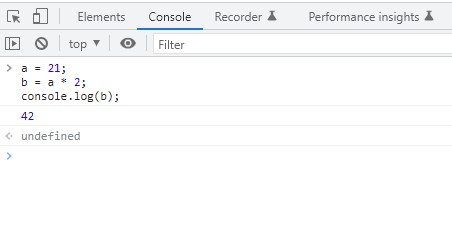

Let's start from the beginning.
A program, often referred to as source code or just code, is a set of
special instructions to tell the computer what tasks to perform. Usually
code is saved in a text file, although with JavaScript you can also
type code directly into a developer console in a browser, which well
cover shortly.
The rules for valid format and combinations of instructions is called
a computer language, sometimes referred to as its syntax, much the
same as English tells you how to spell words and how to create valid
sentences using words and punctuation.
In a computer language, a group of words, numbers, and operators
that performs a specific task is a statement. In JavaScript, a statement
might look as follows:
a = b * 2;
The characters a and b are called variables, which are like simple boxes you can store any of your stuff in.
In programs, variables hold values (like the number 42) to be used
by the program. Think of them as symbolic placeholders for the values themselves.
By contrast, the 2 is just a value itself, called a literal value, because it
stands alone without being stored in a variable.
The = and * characters are operators.
They perform actions with the values and variables such as assign-
ment and mathematic multiplication.
Most statements in JavaScript conclude with a semicolon (;) at theg
end.
The statement
a = b * 2; tells the computer, roughly, to get the
current value stored in the variable b, multiply that value by 2, then
store the result back into another variable we call a.
Programs are just collections of many such statements, which
together describe all the steps that it takes to perform your pro-
gram's purpose.
Statements are made up of one or more expressions. An expression is
any reference to a variable or value, or a set of variable(s) and
value(s) combined with operators.
For example:
a = b * 2;
This statement has four expressions in it:
- 2 is a literal value expression.
- b is a variable expression, which means to retrieve its current
value.
- b * 2 is an arithmetic expression, which means to do the multi-
plication.
- a = b * 2 is an assignment expression, which means to assign
the result of the b * 2 expression to the variable a
A general expression that stands alone is also called an expression
statement, such as the following:
b * 2;
This flavor of expression statement is not very common or useful, as
generally it wouldn't have any effect on the running of the program
-it would retrieve the value of b and multiply it by 2, but then
wouldn't do anything with that result.
How do those collections of programming statements tell the com-
puter what to do? The program needs to be executed, also referred to
as running the program.
Statements like a = b * 2 are helpful for developers when reading
and writing, but are not actually in a form the computer can directly
understand. So a special utility on the computer
is used to translate the code you write into com
mands a computer can understand
For some computer languages, this translation of commands is typi-
cally done from top to bottom, line by line, every time the program
is run, which is usually called interpreting the code.
For other languages, the translation is done ahead of time, called
compiling the code, so when the program runs later, whats running
is actually the already compiled computer instructions ready to go.
It's typically asserted that JavaScript is interpreted, because your Java-
Script source code is processed ach time it's run. But that's not
entirely accurate. The JavaScript engine actually compiles the pro-
gram on the fly and then immediately runs the compiled code.
Let's get familiar with the process of running code in the console.
First, I suggest opening up an empty tab in your browser. I prefer to
do this by typing about: blank into the address bar. Then, make sure
your developer console is open, as we just mentioned.
Now, type this code and see how it runs:
a = 21;
b = a * 2.
console.log(b);
-
Typing the preceding code into the console in Chrome should
produce something like the following:
